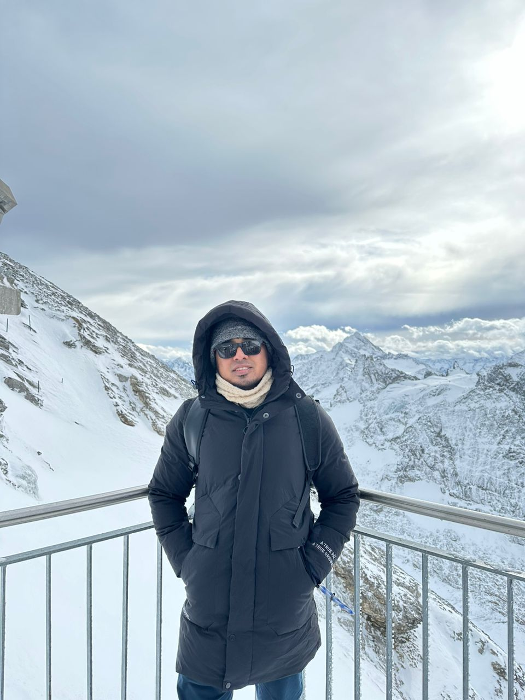

Mohd Ashraf Huzairie Bin Yusof

Summary
Spirited certified BIM Modeller/Engineers with 5 years of experience in construction industry.
Dedicate and enthusiam in order to complete all task given on time.
Additional expertise in the field such as LIDAR scan , BIM and Construction Technical skills.
Education
Bachelor of Engineering (HONS) Civil
Universiti Teknologi Petronas , Perak
2014-2018
CGPA 3:11
Foundation in Civil Engineering
Universiti Teknologi Petronas , Perak
2014-2015
CGPA 3:43
Sijil Peperiksaan Menengah (SPM)
SMK Derma
2013
8A's 1B
Work Experience
KTC Engineering & Construction Pte Ltd
BIM MODELLER | December 2022 - Present
- Responsible in Creating and updating 3D BIM Structural and MEP Models.
- Coordinate with engineers in order to monitor and tracking progress status input in the models.
- Prepare and produce shop drawings and typical details for construction use.
- Doing QAQC for the models in order to check the elements and to follow the standard ruleset of the company.
- Update weekly progress in BIM Model and publish to PowerBI for the management monitoring.
- Carry-out LIDAR scans on site and process the cloud points by using Faro Scene softwares.
- Produce KTC line style standardisation and naming convention to be used for all modellers.
DJB Engineering & Construction Pte Ltd
BIM MODELLER | June 2021 - December 2022
- Collaborated with project team members and consultants in order to create and update accurate 3D BIM structural models using Revit software (ver.2020).
- Created details, layout plan , as-built and shop drawings for construction use by using Autodesk BIM Software Revit & AutoCAD.
- Developed details schedules and bill of quantity based (BOQ) on the BIM models.
- Created parametric families of model elements as per design.
- Created project templates and standards and endusre all documentation follow the standard before issueing to consultant for approval.
- Communicate with design teams and consultant about the clashes regarding design changes and raise RFI.
- Assist BIM Manager in preparing 3D visualization of model to be presented to LTA.
Fong Consult Pte LTd
Project Engineer | January 2020 - April 2021
- Carry-out inspection for roads and pedestrian walkways as required under the Land Transport Authority (LTA) standards and regulations.
- Preparing daily reports for the conditions of the assigned road according to Land Transport Authority (LTA) standards and submit to LTA by daily basis.
- Monitoring progress on site and ensure the work and materials used are accordance to approved specifications , codes , standards and regulations.
- Liaise with the contractor for analyzing information get from the report produced and evaluating the results to choose the best solution to maintenance
the defects and improved the road and other facilities conditions.
RZA Engineering Sdn Bhd
Site Engineer | January 2019 - December 2019
- Responsible in handling infrastructures including roads , drainage and decorative fencing.
- Managing structural parts including constructing shear wall, corbel , colum, beams and slab.
- Check construction details drawings in order to complete the construction process.
- Conduct inspection with JKR and the main contractor's site engineer to verify the completion of the construction tasks.
- Liaise with main contractors and JKR to analyze the best solutions for the problems occurr on site.
China Construction (S.E.A) Corporation Ltd
- Perform an internship at Orkide the royal Condominium Project located in Cambodia with CSCEC Company
- Handling several Civil and Structural Works.
- Responsible in managing tenders of new project for CSCEC.
- Managing procurement and architectural quantity-takeoff.
- Assist Quantity Surveyor for the documents and RFI.
- Attend weekly meeting at site with clients and consultant to discuss any problems and matter on site.
Software Skills
- Revit
- AutoCAD
- Faro Scene
- Solibri
- Civil3D
- Naviswork
- Visual Studio Code
- Microsoft office
Certifications
- Autodesk AutoCAD2022
- Autodesk Naviswork
- Autodesk Revit (Architectural , Civil Structural and MEP)
- Autodesk Revit Architectural Essential Training
Licences
- Board of Engineer Malaysia | Graduate Engineer
- CIBD Malaysia | Civil Engineer